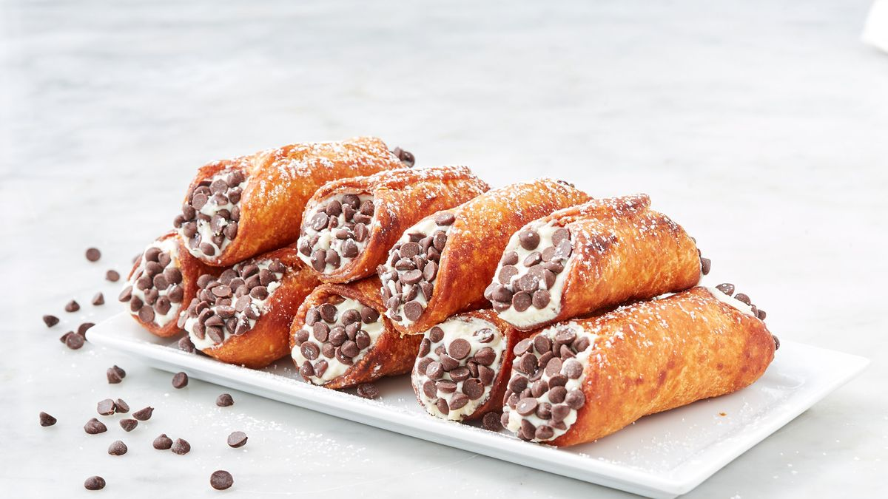

Articole
Homemade Cannoli
 CLICK TO SEE VIDEOItalian bakeries have been serving up cannoli forever. The crispy shell and creamy sweet filling are nearly irresistible. Often times, they come with mini chocolate chips or chopped pistachios or dipped in chocolate. No matter what topping you pick, they're a MAJOR treat. (It's why we couldn't stop ourselves from making cannoli cupcakes!)
Why is there wine in cannoli shells?
Cannoli dough is usually made with white wine, which might seem a little odd. It includes wine for the same reason some pie crusts will include vinegar or vodka. The alcohol tenderizes the pastry and helps make it extra flaky. Who knew?
What is cannoli filling?
Cannoli filling is always made with ricotta and usually powdered sugar to sweeten it. Filling will usually include mascarpone and whipped cream for a lighter filling. You'll sometimes find orange zest or nutmeg in there for extra flavor.
How do I thicken cannoli filling?
Getting the consistency of the cannoli filling is important. Start by draining your ricotta. Place ricotta in a fine mesh strainer and set strainer over a larger bowl. Let sit in refrigerator for at least an hour, preferably 2. How much liquid drains out will depend on the quality of your ricotta. The higher the quality, the less liquid. Even if just a little strains out, it will help in the long run. If you like your filling to be a little sweeter don't add more powdered sugar directly to the ricotta mixture. The powdered sugar will actually cause the mixture to loosen and it won't hold up very well. Add more powdered sugar to your heavy cream when whipping it to make the filling sweeter! Another important step is letting the filling chill. We like to make our filling first and let it hang out in the refrigerator until we are ready to serve the cannoli. The longer it's in there the better.
Ingredients
FOR THE FILLING:
- 1 (16-oz.) container ricotta
- 1/2 c. mascarpone cheese
- 1/2 c. powdered sugar, divided
- 3/4 c. heavy cream
- 1 tsp. pure vanilla extract
- 1 tsp. orange zest
- 1/4 tsp. kosher salt
- 1/2 c. mini chocolate chips, for garnish
FOR THE SHELLS:
- 2 c. all-purpose flour, plus more for surface
- 1/4 c. granulated sugar
- 1 tsp. kosher salt
- 1/2 tsp. cinnamon
- 4 tbsp. cold butter, cut into cubes
- 6 tbsp. white wine
- 1 large egg
- 1 egg white, for brushing
- Vegetable oil, for frying